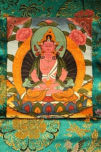

Амитаюс, божество долголетия в тибетском Буддизме, Амитаюса часто называют Буддой долгой жизни, в Непале его можно услышать Аппарамита, а в Бурятии Аюш. Амитаюс это особая форма будды Амитабхи. Самые ранние упоминания о нем можно найти в в тексте Сукхавативьюхе, где Амитаюс фигурирует в качестве одного из эпитетов Амитабхи, который обладает неизмеримой жизнью. В дальнейшем эта особое качество Амитабхи выделяется из нескольких других его свойств, и в тексте Амитаюрдхьяна-сутре примерно в седьмом веке Амитаюс становится уже одним из основных названий Амитабхи.
Наиболее известным и популярным среди буддистов он стал в период с шестнадцатого по восемнадцатый век в Тибете и в Монголии, а также в Китае. Традиционно в молитвах, обращённых к Амитаюсу, миряне просят о даровании не только долгой жизни, но и здоровья и богатства.
Иконография Будды долгой жизни очень похожа на иконографию Амитабхи, на тханках он изображается рубиново красного цвета, руки сложены в дхьяне мудре, он одет в одежду и украшения бодхисатвы и на голове его появляется корона бодхисатв, а в руках сосуд с амритой нектаром бесмертия, который немного вытянут вверх за счет особой крышки.
Основная цель практик, связанных с Амитаюсом, не только в том, чтобы устранить препятствия, способные укоротить жизнь, но и обретение состояния за пределами рождения и смерти.